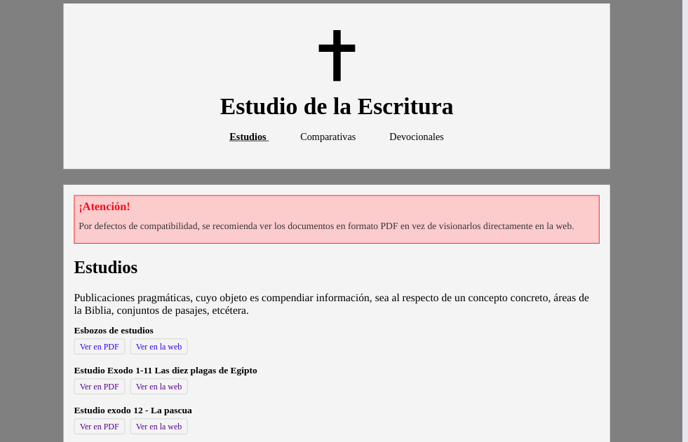

Automatización de una página web
Un portal de teología que enlaza archivos PDF y HTML
Introducción y funcionamiento
Se trata de un proyecto personal, que se adecúa a las necesidades particulares de mi objetivo concreto - la integración automática de contenido a mi web teológica "Estudio Escrituras" -, cuya estructura difiere a la de otro tipo de webs. No es un software de gestión automática de páginas webs, sino mi solución particular aplicada a un único contexto, publicado para ser utilizado como mera referencia y apoyo.
- Cada archivo está organizado en su correspondiente carpeta, bien sea una comparativa, un devocional o un estudio.
- Un script escrito en bash, exportar.sh crea una nueva estructura de carpetas y opera sobre los directorios de mi área de trabajo, convirtiendo automáticamente cada archivo en su interior en formatos .pdf y .html, que son los que presento en esta página.
- Este procedimiento usa las utilidades que brinda LibreOffice para la consola de comandos, denominadas soffice.
- Las exportaciones en PDF siempre funcionan bien, pero cuando hago el mismo proceso con HTML, el formato tiende a desconfigurarse.
- Finalmente, un programa escrito en Python, compilar-web.py inspecciona la estructura de carpetas creada por el script anterior, creando los archivos .html necesarios para enlazar todos los documentos en una página web completa y funcional.
Demostración en vídeo
Repositorio y descarga
Puedes ver y descargar el repositorio en esta página de GitHub.